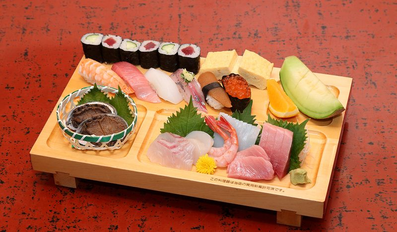
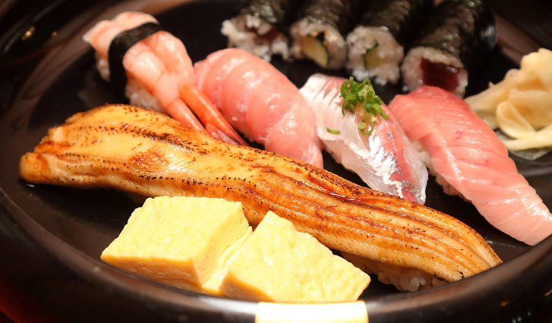
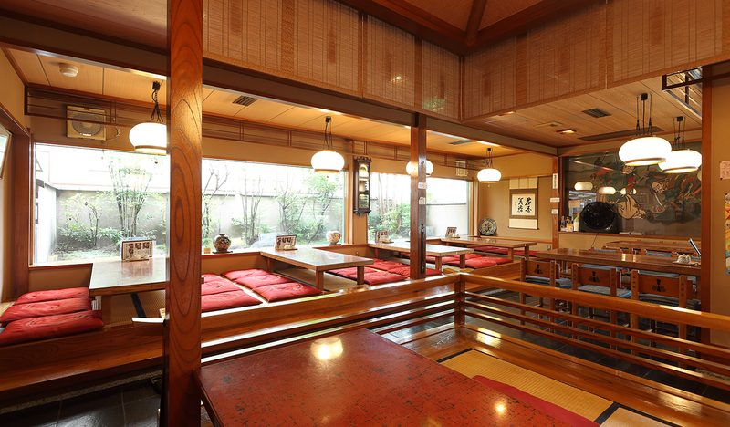

推荐 ① ・ 步行9分可小酌
11/23 周一营业
ひょうたん寿司 伊豆長岡本店（老字号地鱼寿司）
昭和35年（1960年）创业的温泉街老铺，以赤醋寿司饭和每日从沼津港直送的新鲜地鱼（活竹荚鱼アジ、金枪鱼中腹、星鳗、海胆）闻名。店内79席含日式庭园窗景座敷，停好车在旅馆泡完汤慢悠悠走过去，司机终于能放心喝一杯！

招牌「平安」寿司刺身盘

骏河湾地鱼赤醋握寿司

窗景和式座敷＆坪庭
💬 食客评价 1 ｜ Tomomasa Dei（Retty・晚餐）好评推荐
外观木石剪定非常气派，原以为价格很高，进店宽敞舒适，窗边座敷还能欣赏日式坪庭。点了「店长おまかせ寿司（约3,500円）」含12贯握寿司＋鲜鱼骨汤＋茶碗蒸，水准很棒！
💬 食客评价 2 ｜ すけ / ムーミン３（4travel・★4.5–5.0）高性价比
离沼津港近，每天现采新鲜鱼货。晚饭点的「松寿司（约2,640円）」堪称绝品，而且所有寿司套餐都附茶碗蒸和清汤，有着料亭般的高级感但价格非常亲民。
💬 食客评价 3 ｜ mindoo（4travel・★4.0）备选救星
原本想去吃さわやか但排队太夸张，临时改来这家。17点刚过不用等就入座（离开时门口已开始排队）。店员热情亲切、对游客很友好，寿司好吃到非常满足！